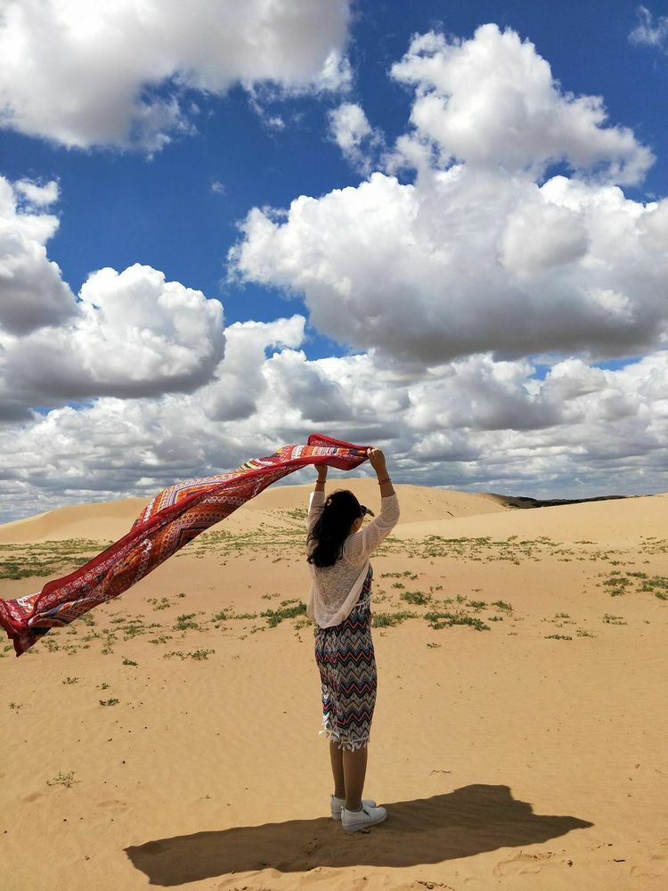

怀揣着激动又兴奋的心情，我们一行17人展开了六天五夜的自由旅程。
因为这次旅行，我们也结下了深厚的友谊，我们是自驾游去的大草原，历时十几个小时车程，到达目的地。
天苍苍，野茫茫，风吹草低现牛羊。说的大概就是这副景相了
清澈的蓝天，洁白无瑕的云彩，不加滤镜，不开美图都可以拍的那么美，草原上的云彩也很神奇，不同的时刻，呈现着不同的美，云彩就像棉花糖一样。
既有层次感，又有厚重感，感觉伸手就能摸到天上的云彩，草原上的白天很长，过一天感觉像过了好几天，晚上七八点的时候，天空还是亮的，这时候的天空又有另一种美。
我最喜欢的是中午一两点左右的云彩。像棉花糖一样，既有层次感，又有厚重感，还出现了深浅不一的肌理效果，感觉伸手就能摸到天上的云彩。
蒙古的饭菜是真心吃不惯，大盘羊肉，奶酪，基本全是荤菜，而且还有膻味，我的小胃实在无福消受，想念青菜,不过大草原的火锅还是不错滴，羊肉纯正，肉质细腻。
在草原上最喜欢吃的就是冰激凌和酸奶，味道比在青岛要地道，耗牛干也好吃，那几天的口粮就是这几样。
这次进锡林郭勒，玩的最好的一个地方，就是朋友家的大沙漠，那是一个牧民去，那里没有当地的牧民做向导根本进不去，没有电、没有信号、没有一切娱乐设施、没有网络，只有蓝天白云，牛马为伴，那里的交通工具是马，人家串门都是骑马，就像是进入了世外桃源。
从此与世无争，短暂的告别城市的喧嚣，对心灵也是一种休憩。

蒙古族的叔叔、阿姨待客热情，听说我们要来，早早的宰上一头羊招待我们，放在平时，人家的一头羊可是要吃上半年的……
他们家的后边就是一大片沙漠，据说，那都是朋友家的，放在我们这儿，就是土豪之家啊……
大沙漠的紫外线不是一般的强哈，我都武装的这么严实了，还是晒黑了好几个度。
在原产地喝到的酸奶和冰激凌味道就是不一样，奶油很细腻也很香甜。
本次旅行在买买买中结束，对蒙古的大草原意犹未尽……